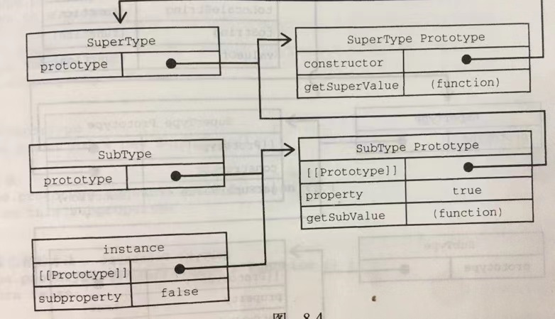

继承之原型链
首先再明确一下构造函数，原型，实例之间关系
- 每一个构造函数都有一个原型对象
- 原型对象有个属性叫做constructor指回构造函数
- 实例是用构造函数创建出来的，它有一个指针
[[Prototype]]指向其构造函数的原型，也可以说是实例的原型
按照上面的说法，假设，如果一个原型是另一个类型的实例，那就意味着这个原型本身有一个内部指针指向他的构造函数的原型，也就是它的原型，相应的另外一个原型也有一个指针指向另外一个构造函数。所以 在实例和原型之间构造了一条原型链
实现一条原型链的代码如下：
function SuperType(){
this.property = true;
}
SuperType.prototype.getSuperValue = function(){
return this.property;
}
function SubType(){
this.subproperty = false;
}
// 这里直接继承SuperType，将原型指向SuperType的实例
SubType.prototype = new SuperType();
SubType.prototype.getSubValue = function(){
return this.subproperty;
}
let instance = new SubType();
console.log(instance.getSuperValue()); // true;以下是他们的原型链图：

image-20210531100430978
这个例子继承的关键就是在于，将SubType的默认原型设置为了SubType的实例，这样SubType的实例不仅能从superType的实例中继承属性方法，而且还和SuperType挂钩了
这个时候
- instance内部的
[[Prototype]]指向SubType.prototype - SubType.prototype通过内部的
[[Prototype]]指向了SuperType.prototype
调用或者访问实例的一个属性，这个搜索过程是逐级向上的，如果实例上没有找到属性或者方法就回去原型上找，如果还没有，就去原型的原型上找，直到一直找到Object.prototype.__proto__为null的时候，就是一直找到原生对象的原型指向的原型（原型链末端）
上面的例子实际的原型链是如下图所示的

image-20210531101503489
原型链存在的问题
原型链毕竟也是由原型搭起来的，这个时候就包含了原型存在的问题
在原型那篇文章说过
问题一
原型中包含引用值的时候，会在实例间共享
所以为什么通常一些属性是定义在构造函数中，而不是直接存在原型上
问题二
子类型在实例化的时候不能够给父类型的构造函数传参数。
实际上我们还无法在不影响所有对象实例的情况下把参数传给父类的构造函数。
所以原型链基本不会被单独使用
这个时候就衍生出了解决原型链存在问题的几种继承方案
例如 盗用构造函数 组合继承 原型式继承 寄生式继承 寄生组合式继承